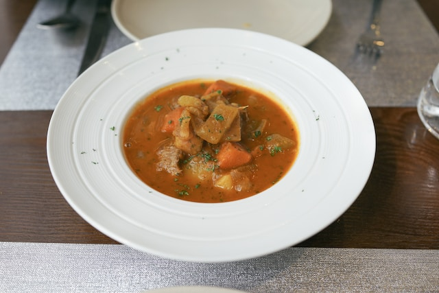

Japanese Curry Recipe

Description
Japanese curry is a popular dish in canada. It often includes various vegetables, chicken, beef or pork and a roux made from curry and masala seasoning.
Curry is one of the most popular dishes in Japan. It is mostly served on top of rice or noodles. It originates from Indian curry which was brought to the Japan by British-Indian officers.
Ingredients
- rice
- roux - self-made or bought in a store
- apple
- onions
- apple
- celery
- water or chicken broth
- potatoes
- fresh ginger
- soy sauce
- sunseed flower
- carrots
- honey - 1 tbsp
- ketchup
- garlic
Steps
- Make roux if necessary
- Make rice or noodles, this recipe uses rice but you can use noodles instead
- Add ginger and garlic
- Fry onions until it's golden
- Add chicken, fry till it's white outside
- When chicken is cooked, add carrots, salt and pepper
- Add broth or water, heat until it simmering, remove foam
- Add apple, potatoes and celery, add salt and honey
- Simmer until potatoes cooked
- Add roux
- Add soy sauce, ketchup and salt if necessary